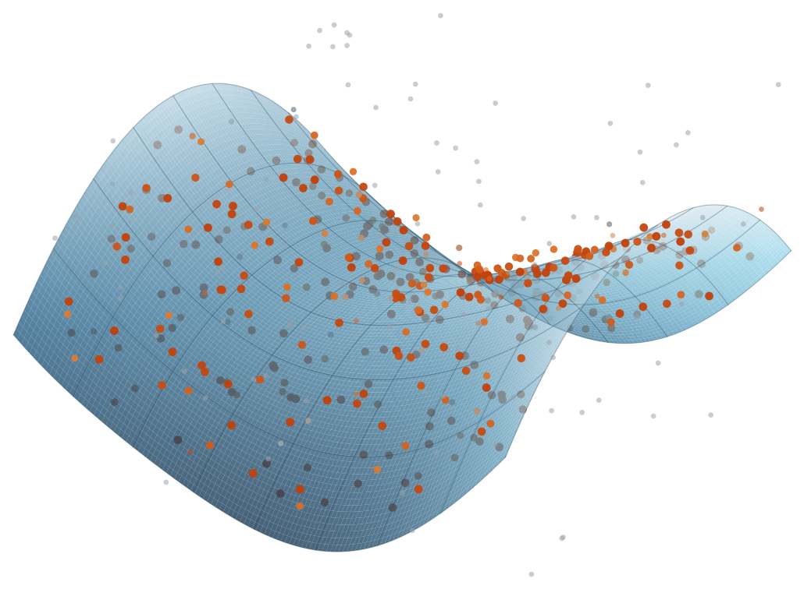

Robust Local Optimization Done Right
Score Sharp, Refine Soft
James Pritts · Kevin Köser Marine Data Science Kiel University ACCV 2026

Evaluate a local optimizer
The LO evaluation engine refits every optimizer through one layer, refit_imc!, and composes it with a scorer into an arm (ComposedSpec) collected in a paper's Roster.
Reproduce the paper
accv2026/ holds one config-driven driver per figure and table: sequential cross-validation, keyed output directories, and renders straight into the manuscript.
Compare against classical LO
RansacLib's LO-MSAC (LebedaLOPlus, LebedaIterLO), vendored unmodified, and PoseLib's truncated refiners (PoseLibLm, PoseLibLZ) run as baseline arms under the same budget.
RANSAC scoring and local optimization impose different robustness requirements. We isolate robust-loss shape, inlier-scale misspecification and optimization strategy for essential, fundamental and homography estimation.
| ζ | 1/16 | 1 | 4 | 16 | 128 | |
|---|---|---|---|---|---|---|
| Stu-tU+Welsch-HQ (ours) | error [°] | 2.71 | 1.58 | 1.84 | 2.55 | 6.19 |
| mAA@10° | 0.594 | 0.686 | 0.666 | 0.619 | 0.505 | |
| time [ms] | 934 | 160 | 114 | 74 | 47 | |
| SupeRANSAC | error [°] | 53.73 | 2.23 | 3.49 | 10.14 | 38.27 |
| mAA@10° | 0.210 | 0.643 | 0.558 | 0.333 | 0.072 | |
| time [ms] | 92 | 118 | 176 | 263 | 365 |
RANSAC under scale miscalibration (paper, Table 3). Scene-averaged median pose error, mAA@10° and median wall time per pair on the 11 PhotoTourism test scenes, single-threaded; both systems tuned at ζ = 1, SupeRANSAC at its validated maximum noise level with at most 10 000 trials. ζ scales the inlier scale given to each system, from 16 times too small to 128 times too large. Bold marks the better system per column.
Abstract
RANSAC scoring and local optimization (LO) impose different robustness requirements, motivating the separation of hypothesis selection from refinement. We systematically isolate the effects of robust-loss shape, incorrectly specified inlier scales, and optimization strategy on essential matrix, fundamental matrix, and homography estimation. A profile-marginal score marginalizes the nuisance inlier scale and selects an inlier partition, from which we estimate the scale that sets the LO loss width; this makes LO robust to an inlier scale specified too large, whereas one specified too small degrades selection itself. Refinement needs gradient from correspondences the seed currently rejects: optimizers that reweight from current residuals stay pinned to their seed, whereas methods with broad basins recover strongly perturbed seeds yet degrade accurate score-selected hypotheses, so basin size alone is insufficient to assess RANSAC LO. Joint half-quadratic optimization balances the two and is the most consistent strategy across model classes. An optimizer matched to the profile-marginal score, which never decreases it, does not reach the best accuracy, challenging the prescription that scoring and refinement objectives should match. Composed from these findings, our RANSAC reduces the median essential-matrix pose error of a state-of-the-art RANSAC on PhotoTourism from 2.23° to 1.58° with a correctly specified inlier scale and from 38° to 6.2° when it is grossly misspecified (128× too large).
Keywords: robust estimation · RANSAC · local optimization · half-quadratic lifting · graduated non-convexity
Install
The repository is private until the public release; the commands below need access to it and to CauRegistry.
The package
Pkg — LocalOptimizationDoneRight is published in CauRegistry, not General (Julia 1.11+). The RansacLib baseline builds a small C++ shim on install, which needs git, a C++17 g++ and Eigen:
using Pkg; Pkg.Registry.add(RegistrySpec(url = "git@github.com:prittjam/CauRegistry.jl.git")); Pkg.add("LocalOptimizationDoneRight")The paper's experiments
git — clone the repository and instantiate the research project accv2026/, which devs the package by path and pins its environment in a tracked Manifest.toml:
git clone git@github.com:prittjam/LocalOptimizationDoneRight.git && cd LocalOptimizationDoneRight/accv2026 && julia --project=. -e 'using Pkg; Pkg.instantiate()'Getting started
The Overview introduces the engine: scoring versus refinement, arms and rosters, width sources and the refit layer. Reproducing the paper maps every figure to its config and driver, and Baselines covers the classical LO arms.
using LocalOptimizationDoneRightconst LODR = LocalOptimizationDoneRight# `pair` is a two-view pool record (VisualGeometryCore `PoolPair`, read with# VisualGeometryEval's `load_pool`), `j` the index of the pool model to refine.ctx = build_pair_ctx(problem_type(:E), pair) # pool-frame geometry, once per pairseed = refit_seed(ctx, pair.models[j]) # stored F → metric essential seedlo = PoseLibLm(LODR.lo_iteration_budget()) # TLS-IRLS at the engine's LO budgetimc, lo_ns = refit_imc!(ctx, lo, seed, loss_width) # pose error [deg], optimizer time [ns]Method
Hypothesis selection and refinement are separate roles with separate robustness requirements, and the engine evaluates them separately.
- Score sharp. A profile-marginal score marginalizes the nuisance inlier scale and selects an inlier partition; the scale estimated from that partition sets the LO loss width (partition anchoring), so no externally calibrated threshold is needed.
- Refine soft. Local objectives and strategies — TLS, Stu-tU, Welsch and Geman–McClure losses under IRLS, joint half-quadratic (HQ) lifting, graduated non-convexity (GNC) and classical LO⁺ — are each composed with the same scorer, tuned by the same cross-validation, and run under the same 25-model-update budget.
- Polish hard. A final least-squares refit on the selected inliers is evaluated as a separate step.
- Evaluate in isolation. Perturbed-seed basins, scale miscalibration over ζ ∈ [1/128, 128], accuracy against the hypothesis budget, and end-to-end RANSAC against SupeRANSAC.
Results
- Local optimization needs gradient from tentative correspondences, those a minimal-sample model classifies as outliers. Methods that reweight from current residuals, including the objective-matched Stu-tU-BCD, stay pinned to their seed.
- Joint HQ lifting balances travel and precision. It is the most consistent strategy across model classes and performs best on PhotoTourism, where some score-selected seeds, especially at small budgets, lie outside the basin of static reweighting. GNC recovers the most distant seeds but is a liability near the solution, where RANSAC usually supplies its seeds.
- Miscalibration splits along the same line. Partition anchoring removes the reliance on an externally calibrated threshold and keeps LO robust to an inflated scale, whereas a deflated scale degrades selection, which no local optimizer repairs.
- Selection bounds what LO can gain, and polishing by a least-squares refit on the selected inliers does not measurably move the solution out of LO's basin.
- Composed RANSAC. The profile-marginal scorer with partition-anchored, half-quadratically lifted LO substantially outperforms a strong baseline on essential-matrix estimation.
Citation
The paper is on arXiv (PDF). If you use this project for your research, please cite:
@inproceedings{Pritts2026LocalOptimization,
title = {Robust Local Optimization Done Right},
author = {Pritts, James and K{\"o}ser, Kevin},
booktitle = {Asian Conference on Computer Vision (ACCV)},
year = {2026},
eprint = {2610.05743},
archivePrefix = {arXiv}
}The classical LO baseline is RansacLib's LO-MSAC; if you use the LebedaLOPlus or LebedaIterLO arms, cite RansacLib (Sattler et al., 2019) and Lebeda, Matas and Chum (BMVC 2012) — see Baselines.
Acknowledgments
James Pritts is funded by Kiel Training for Excellence, an EU Horizon Europe programme under the Marie Skłodowska-Curie Actions (MSCA), grant agreement No. 101081480, and by Kiel Marine Science (KMS).